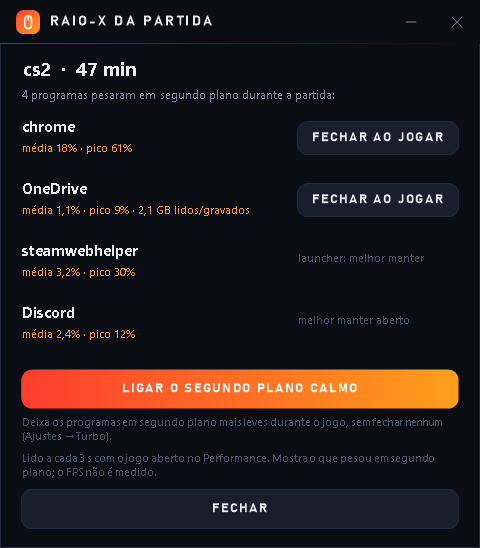
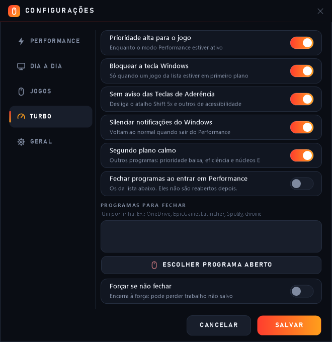
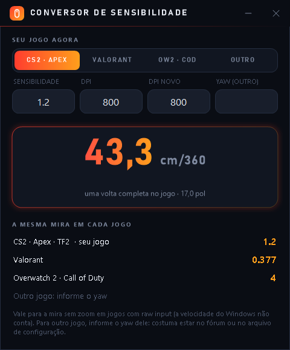

Performance
Para jogar
- Ponteiro 1:1 e aceleração desligada
- Plano de energia Alto desempenho
- USB sem suspensão: o mouse nunca "adormece"
- Turbo: prioridade alta, tecla Windows bloqueada, notificações em silêncio
Grátis · código aberto · Windows 10 e 11
O MouseModes troca mouse, energia e Windows entre Performance e Dia a dia, sozinho quando o jogo abre, e desfaz tudo quando ele fecha. Sem administrador, sem telemetria, sem tweak milagroso.
Instalador de ~280 KB · só para o seu usuário · atualiza sozinho
Para jogar
Para trabalhar e navegar
A troca automática reconhece o jogo pelo nome do processo. Também dá para trocar com Ctrl+Alt+M, até dentro do jogo, ou por um botão do Stream Deck.
Em vez de fechar, deixa navegador, Steam e OneDrive com prioridade baixa e em modo de eficiência. Nos Intel híbridos, manda eles para os núcleos E e deixa os P para o jogo.
Ao fechar o jogo, mostra quem mais pesou e como estava a rede, e resolve num clique: fechar ao jogar ou acalmar.
20 segundos de alvos sugerem o DPI. Com uma régua, o app mede o DPI que o sensor entrega de verdade.
A mesma mira (cm/360) em CS2, Apex, Valorant, Overwatch 2 e Call of Duty, ou com outro DPI.
Mede quantas leituras por segundo o mouse manda, o jitter, e se o switch já dá clique duplo.
Avisa quando o monitor de 144 ou 165 Hz está rodando a 60 Hz e corrige com um clique.
Velocidade, aceleração, plano e até a resolução (4:3 esticado) de cada jogo, que volta ao normal quando ele fecha.
Baixa a versão nova do GitHub, confere o SHA-256 e instala fora do jogo, com as mesmas configurações.
Raio-X da partida
Enquanto o jogo está aberto, o app anota a cada 3 segundos quanto processador e quantos dados cada programa em segundo plano usou, e mede o ping até o roteador e até a internet a cada segundo. No fim, um aviso mostra os culpados (chrome com pico de 61%, OneDrive com 2,1 GB), os picos de ping e se vieram do Wi-Fi ou da internet.
Só lê, sem administrador. Mede quem pesou e a rede, não o FPS.

Turbo
Prioridade alta para o jogo, tecla Windows bloqueada com o jogo na frente, sem o aviso das Teclas de Aderência, notificações em silêncio e o segundo plano calmo. Se o app travar no meio, ele desfaz ao abrir de novo.

Conversor de sensibilidade
Digite a sensibilidade e o DPI que você usa e veja quanto o mouse anda para uma volta completa, e o valor que dá a mesma mira em cada jogo. Trocou o DPI? O app recalcula tudo.

Sem promessa de FPS mágico. O que pesa de verdade:
É o que mais pesa, e se configura no programa do mouse. 1000 Hz é uma leitura por ms; 125 Hz, uma a cada 8 ms. O medidor do app confere.
Com velocidade 10, o movimento fica previsível em menus, no desktop e em jogos sem raw input.
Evitam que processador e porta USB "durmam" e causem micro travadas.
O app não mexe em MouseDataQueueSize, bcdedit e afins: o ganho é duvidoso e às vezes piora.
MouseModes-Setup.exe e clique em Próximo até o fim.Para desinstalar: Configurações → Aplicativos instalados → MouseModes. O mouse e a energia voltam ao Dia a dia.
É de graça, leva um segundo e ajuda mais gente a achar o MouseModes. Ideias e bugs são bem-vindos nas issues.
O MouseModes pediu a assinatura de código gratuita para projetos open source da SignPath Foundation. Quando o projeto for aprovado, os instaladores das Releases do GitHub passam a ser assinados por ela, direto do build do CI do repositório. Até lá, o instalador não é assinado: confira o SHA-256 de cada Release.
Free code signing provided by SignPath.io, certificate by SignPath Foundation
Só é assinado o que sai do build automático do repositório, a partir do código público, com aprovação manual a cada versão.
Sem conta, sem telemetria, sem anúncios. O app só fala com outros sistemas nestes casos, e dá para desligar cada um em Ajustes → Privacidade:
As configurações e o registro ficam no seu PC, em %APPDATA%\MouseModes. O instalador mostra este aviso antes de instalar.